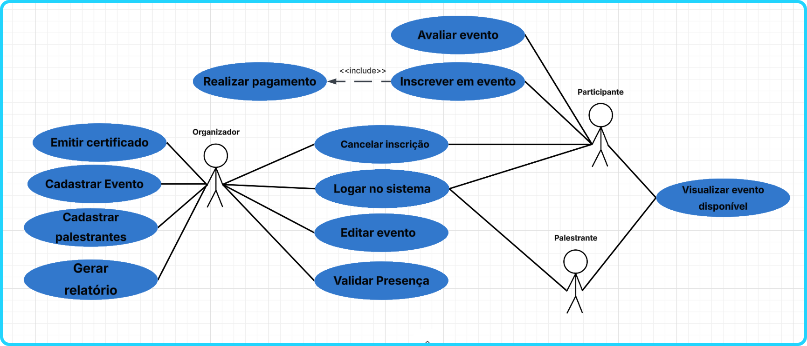

Sistema de eventos – Arquitetura de Software (Modelo 4+1)
Este projeto foi desenvolvido em equipe durante a disciplina de Arquitetura de Software e teve como objetivo a modelagem arquitetural de um sistema de gerenciamento de eventos.
A arquitetura do sistema foi planejada utilizando o modelo 4+1 de visões arquiteturais, que permite representar o sistema a partir de diferentes perspectivas, como visão de casos de uso, visão lógica, visão de implantação e requisitos de qualidade. Essa abordagem ajuda a estruturar o sistema de forma organizada, garantindo que tanto os requisitos funcionais quanto os não funcionais sejam considerados durante o planejamento da solução.
O sistema proposto contempla diferentes tipos de usuários, como organizadores, participantes e palestrantes, permitindo o gerenciamento completo do ciclo de vida de um evento. Entre as principais funcionalidades estão o cadastro e gerenciamento de eventos, inscrição de participantes, geração de relatórios, validação de presença por QR Code e emissão automática de certificados digitais.
Durante o desenvolvimento do trabalho em equipe, cada integrante contribuiu com diferentes partes da documentação e da modelagem arquitetural. Minha principal contribuição foi a elaboração do Diagrama de Casos de Uso Significativos, responsável por representar graficamente as interações entre os usuários e o sistema, destacando as funcionalidades essenciais do projeto. Esse diagrama foi construído com base nos requisitos definidos pela equipe e serviu como referência para a definição das principais funcionalidades do sistema.

Além da criação do Diagrama de Casos de Uso Significativos, também participei ativamente do levantamento e organização dos requisitos do sistema, colaborando com a equipe na definição das principais funcionalidades e interações entre usuários e sistema. Durante o desenvolvimento do trabalho, contribuí na revisão e estruturação do documento, realizando ajustes e melhorias para garantir maior clareza, organização e padronização na documentação final do projeto.
A arquitetura definida para o sistema segue um modelo monolítico em camadas, dividido em apresentação, aplicação, domínio e persistência. Essa organização facilita a separação de responsabilidades dentro da aplicação, tornando o sistema mais organizado, manutenível e escalável.
Este projeto contribuiu para o aprofundamento de conhecimentos em modelagem de sistemas, arquitetura de software e UML, além de proporcionar experiência prática no levantamento de requisitos, documentação técnica e trabalho colaborativo em equipe.
Baixar documentação completa do projeto